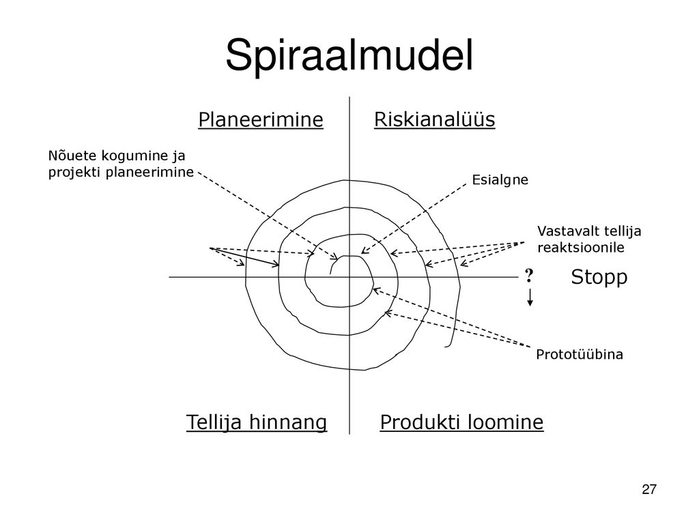

Spiraalmudel
Samuti üks iteratiivseid arendusmudeleid. Protsess on nagu spiraal. Korduste uurimistega teostatavuse süsteem.
Eesmärkide seadmine - selles faasis määratakse korduse eesmärgid, piirangud protsessis, tulemused, juhtimisplaan, alternatiivsed strateegiad lähtudes riskidest
Riskide hindamine ja maandamine - leitud riskiga tehakse analüüs, võetakse ette midagi riski maandamiseks
Arendus ja valideerimine - valitakse arendusmudel, mis aitab vähendada riske.
Planeerimine - projekti ülevaatamine ja tehakse vastavad otsused, kas jätkata järgmisel kordusel, kui jah, tehakse plaan faasi jaoks

--------------------------------------------------
HEAD
VEAD
Riskide arvestamine ehk juhtida nende tegelemise vajalikkusele
Puudulik testimise faas, vaid lõppeb kohe kliendiga
Projekti ülevaatamine
Sekotorite jaotus ehk ebavõrdne tööjaotus
Kasutatud allikas